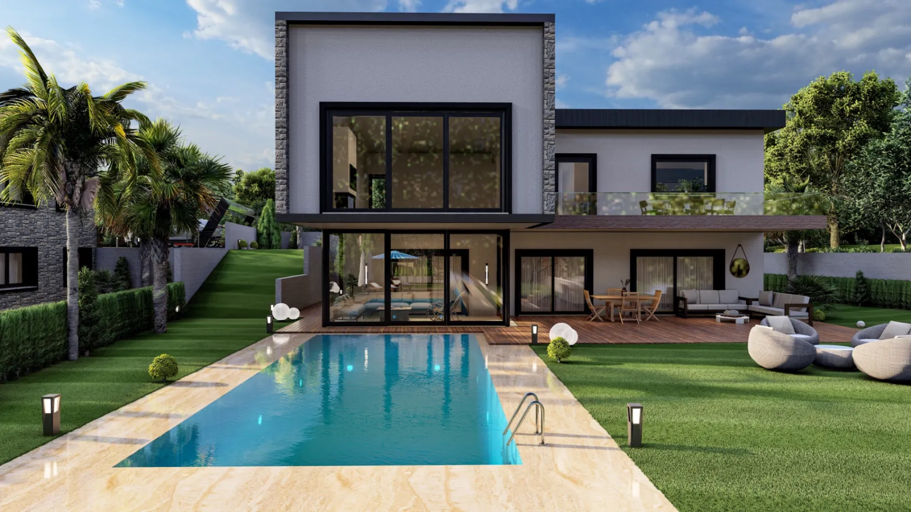
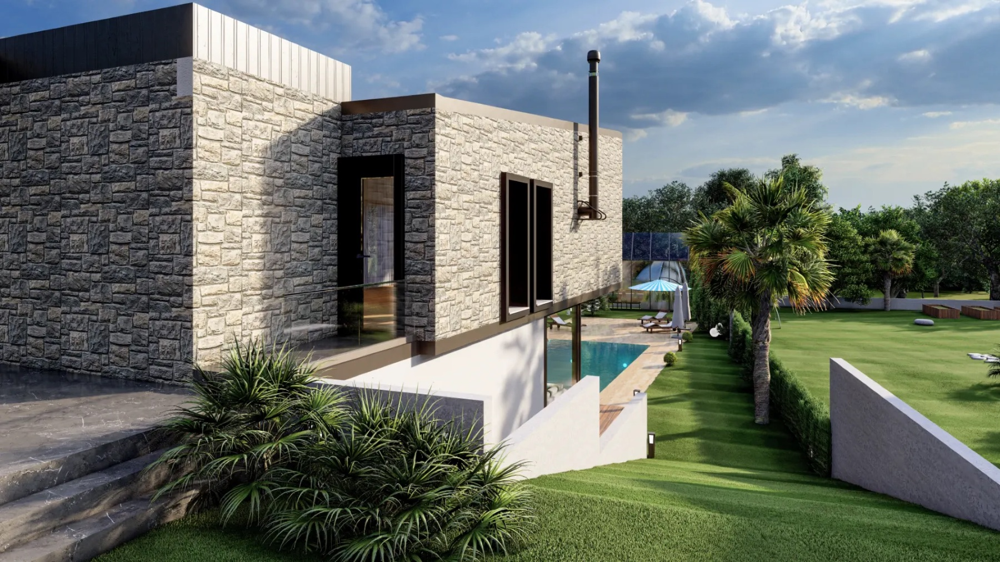

Şirinkent, Urla, İzmir

Oran Mühendislik, Urla’da her birinde özel havuz bulunan altı adet 5+2 villa tanıtıyor. Resmî kuşbakışı görsel, altı villayı 3 + 3 düzende gösteriyor.
Geliştiricinin proje galerisinden seçilen kaynak görseller.

Mayıs 2027, geliştiricinin açıkladığı teslim tarihidir; takvimi teyit edin. Kaynak 12 Ekim 2026 tarihinde kontrol edildi; müsaitlik ve tarihler geliştirici tarafından teyit edilmelidir.
This example is not accepting enquiries. Sipariş edilen bir sunum, onayladığınız iletişim bilgilerini ve başvuru bağlantılarını içerir.